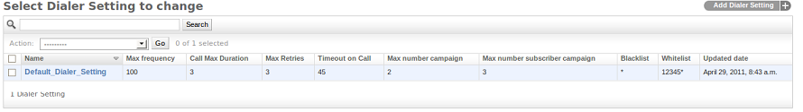
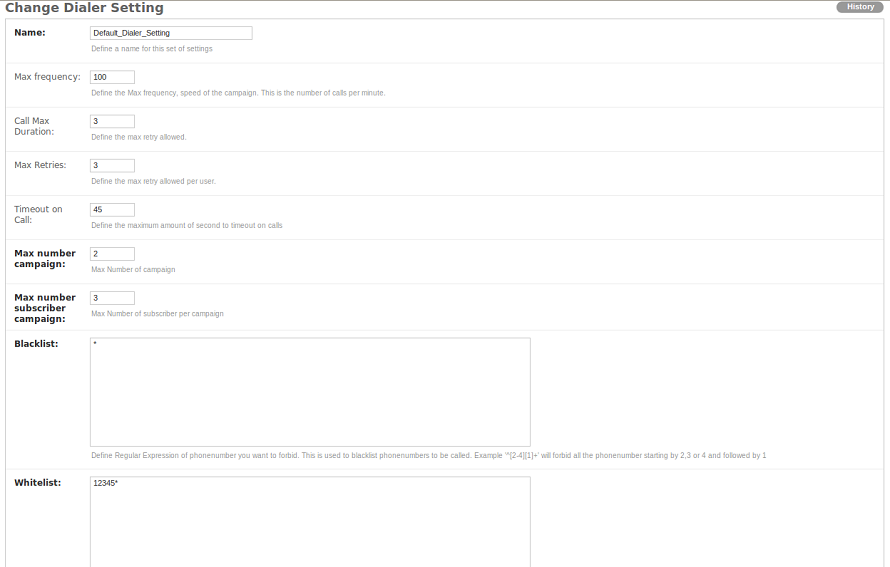

Dialer Settings¶
Add Dialer Settings¶
Each user (known as a Manager in DialerAI) including the admin users, need to have Dialer Settings and gateways associated with their account. These set the limit to which each user can utilise DialerAI in terms of calls per minute, call duration, subscribers and campaigns, as well as blacklisting or whitelisting phone numbers.
In the Admin Dashboard, locate the Dialer Settings, and click Add, put a descriptive name in the name field and then set the limits for these dialer settings, including maximum calls per minute and other settings.
Dialer settings:
Update dialer settings:
Apply Dialer Settings and Gateway to Use¶
The Dialer Settings have to be associated with the user’s account. For the purposes of this demonstration, we are using the root user. In production, you would apply these settings to the Manager’s settings.
In the Admin dashboard, click Admins, then root. Scroll to the bottom of the page.
- Optionally add an accountcode, which can be used for billing in an external billing application to identify the customer from the CDR. The accountcode must be numerical.
- Select which Dialer Settings apply to this customer.
- Select which gateway(s) this customer is allowed to use.
Finally, click save.